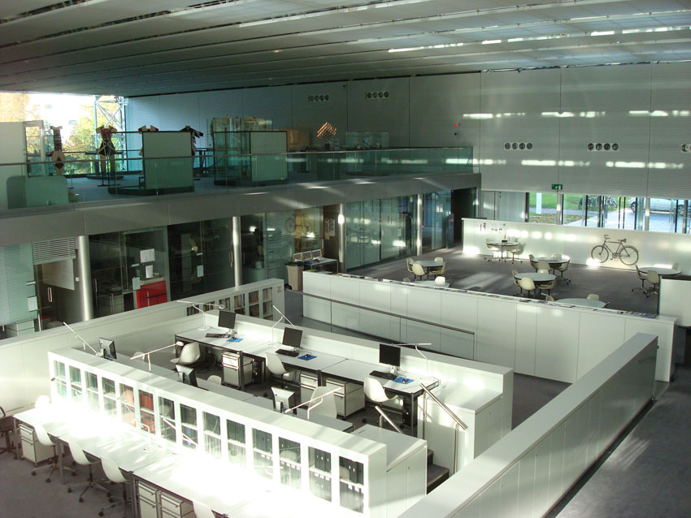

Future
In the future, I'd like to use the programming skills I learned in this class by applying them to what I learn in art theory and practice. I hope that what I have learned about algorithms, loops, patterns, and binaries in this class correlate with the way art is able to be interpreted in an abstract sense. I think it would be interesting to see if there was any overlap in the way that artists or the human conscience thinks about art and the way computers think about art.

Source: IWAM2009-License: Creative Commons CC0 1.0 Universal Public Domain Dedication